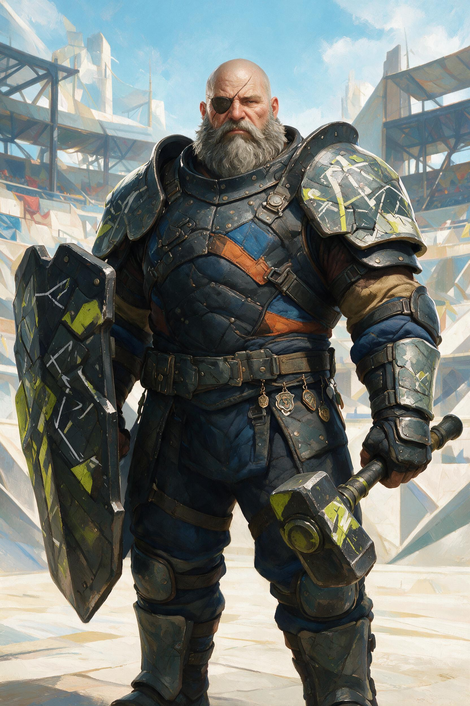

SILHUETA
TOYÉTICA
Personagens reconhecíveis em dois segundos, mesmo pequenos na carta.
DIREÇÃO RECOMENDADA · AGOSTO 2026
O jogo deixa o medieval para trás. Cada rota vem de uma cultura, época e gênero diferente — unidas por silhueta, cor, luz e uma mesma energia competitiva.
A unidade não vem de vestir todo mundo com a mesma armadura. Vem de quatro decisões compartilhadas.
Personagens reconhecíveis em dois segundos, mesmo pequenos na carta.
Cinco acentos cromáticos, um neutro escuro e luz de arena.
Plástico, cerâmica, tecido, relíquia e metal contam de onde cada um veio.
Números, emblemas e recortes fazem tudo pertencer ao mesmo campeonato.
TOPO / CULTURA VISUAL
Brutalismo, esporte de contato e engenharia improvisada.
Uma família expressiva para impacto, outra cheia de detalhes para sistema e uma mono para números.
Largura variável transforma títulos em movimento, pressão e personalidade.
Ink traps aparecem grandes e mantêm o texto afiado quando pequeno.

O BASTIÃO IMPROVISADO
GOLPE DE ESCUDODano = Força + Poder − Armadura
MURALHAEscudo +6. Prende inimigos adjacentes.
Ela é a transmissão do campeonato: personagem grande, informação rápida, cor de rota e gesto gráfico. A lore aparece em materiais e nomes — não em ornamento medieval.
Não copiar estilos. Absorver como esses sites transformam navegação, cor, personagem e mapa em experiência.
5 cores de rota, 3 famílias tipográficas, grid, raios e sombras.
Vharn + 4 heróis, uma carta, um monstro e um quadrante do mapa.
Prompt-base, pose, luz, crop e controle de materiais por mundo.
Substituição gradual de assets, sem alterar regra ou motor.